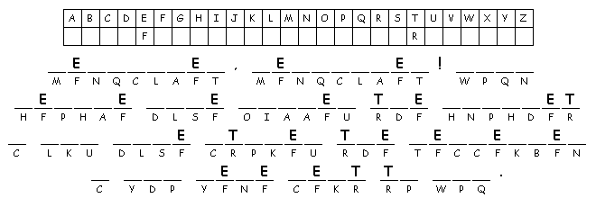
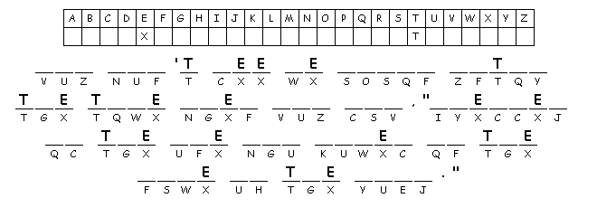

This Week: Genesis 15:1-12, 17-18 Psalm 27 Philippians 3:17-4:1 Luke 13:31-35 or Luke 9:28-36
Elementary School Pew-work

Created by Puzzlemaker at DiscoverySchool.com
What does
Jerusalem do to prophets?
_____________________________________________________________________
_____________________________________________________________________

When will
Jesus come back?
_____________________________________________________________________
_____________________________________________________________________
Next
week: Isaiah
55:1-9 Psalm
63:1-8 1
Corinthians 10:1-13 Luke
13:1-9: